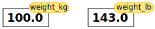

Python Fundamentals
Contents
Python Fundamentals#
Objectives
Assign values to variables.
Questions
What basic data types can I work with in Python?
How can I create a new variable in Python?
How do I use a function?
Can I change the value associated with a variable after I create it?
Variables#
Any Python interpreter can be used as a calculator:
3 + 5 * 4
23
This is great but not very interesting.
To do anything useful with data, we need to assign its value to a variable.
In Python, we can assign a value to a variable, using the equals sign =.
For example, we can track the weight of a patient who weighs 60 kilograms by
assigning the value 60 to a variable weight_kg:
weight_kg = 60
From now on, whenever we use weight_kg, Python will substitute the value we assigned to
it. In layperson’s terms, a variable is a name for a value.
In Python, variable names:
can include letters, digits, and underscores
cannot start with a digit
are case sensitive.
This means that, for example:
weight0is a valid variable name, whereas0weightis notweightandWeightare different variables
Types of data#
Python knows various types of data. Three common ones are:
integer numbers
floating point numbers, and
strings.
In the example above, variable weight_kg has an integer value of 60.
If we want to more precisely track the weight of our patient,
we can use a floating point value by executing:
weight_kg = 60.3
To create a string, we add single or double quotes around some text. To identify and track a patient throughout our study, we can assign each person a unique identifier by storing it in a string:
patient_id = '001'
Using Variables in Python#
Once we have data stored with variable names, we can make use of it in calculations. We may want to store our patient’s weight in pounds as well as kilograms:
weight_lb = 2.2 * weight_kg
We might decide to add a prefix to our patient identifier:
patient_id = 'inflam_' + patient_id
Built-in Python functions#
To carry out common tasks with data and variables in Python,
the language provides us with several built-in functions.
To display information to the screen, we use the print function:
print(weight_lb)
print(patient_id)
132.66
inflam_001
When we want to make use of a function, referred to as calling the function,
we follow its name by parentheses. The parentheses are important:
if you leave them off, the function doesn’t actually run!
Sometimes you will include values or variables inside the parentheses for the function to use.
In the case of print,
we use the parentheses to tell the function what value we want to display.
We will learn more about how functions work and how to create our own in later episodes.
We can display multiple things at once using only one print call:
print(patient_id, 'weight in kilograms:', weight_kg)
inflam_001 weight in kilograms: 60.3
We can also call a function inside of another function call.
For example, Python has a built-in function called type that tells you a value’s data type:
print(type(60.3))
print(type(patient_id))
<class 'float'>
<class 'str'>
Moreover, we can do arithmetic with variables right inside the print function:
print('weight in pounds:', 2.2 * weight_kg)
weight in pounds: 132.66
The above command, however, did not change the value of weight_kg:
print(weight_kg)
60.3
To change the value of the weight_kg variable, we have to
assign weight_kg a new value using the equals = sign:
weight_kg = 65.0
print('weight in kilograms is now:', weight_kg)
weight in kilograms is now: 65.0
Variables as Sticky Notes#
A variable in Python is analogous to a sticky note with a name written on it: assigning a value to a variable is like putting that sticky note on a particular value.

Using this analogy, we can investigate how assigning a value to one variable does not change values of other, seemingly related, variables. For example, let’s store the subject’s weight in pounds in its own variable:
# There are 2.2 pounds per kilogram
weight_lb = 2.2 * weight_kg
print('weight in kilograms:', weight_kg, 'and in pounds:', weight_lb)
weight in kilograms: 65.0 and in pounds: 143.0
Everything in a line of code following the ‘#’ symbol is a comment that is ignored by Python. Comments allow programmers to leave explanatory notes for other programmers or their future selves.

Similar to above, the expression 2.2 * weight_kg is evaluated to 143.0,
and then this value is assigned to the variable weight_lb (i.e. the sticky
note weight_lb is placed on 143.0). At this point, each variable is
“stuck” to completely distinct and unrelated values.
Let’s now change weight_kg:
weight_kg = 100.0
print('weight in kilograms is now:', weight_kg, 'and weight in pounds is still:', weight_lb)
weight in kilograms is now: 100.0 and weight in pounds is still: 143.0

Since weight_lb doesn’t “remember” where its value comes from,
it is not updated when we change weight_kg.
Challenge 1: Check Your Understanding#
What values do the variables mass and age have after each of the following statements?
Test your answer by executing the lines.
mass = 47.5
age = 122
mass = mass * 2.0
age = age - 20
Solution
mass holds a value of 47.5, age does not exist
mass still holds a value of 47.5, age holds a value of 122
mass now has a value of 95.0, age’s value is still 122
mass still has a value of 95.0, age now holds 102
Challenge 2: Sorting Out References#
Python allows you to assign multiple values to multiple variables in one line by separating the variables and values with commas. What does the following program print out?
first, second = 'Grace', 'Hopper'
third, fourth = second, first
print(third, fourth)
Solution
Hopper Grace
Challenge 3: Seeing Data Types#
What are the data types of the following variables?
planet = 'Earth'
apples = 5
distance = 10.5
Solution
print(type(planet))
print(type(apples))
print(type(distance))
<class 'str'>
<class 'int'>
<class 'float'>
Keypoints
Basic data types in Python include integers, strings, and floating-point numbers.
Use
variable = valueto assign a value to a variable in order to record it in memory.Variables are created on demand whenever a value is assigned to them.
Use
print(something)to display the value ofsomething.Use
# some kind of explanationto add comments to programs.Built-in functions are always available to use.